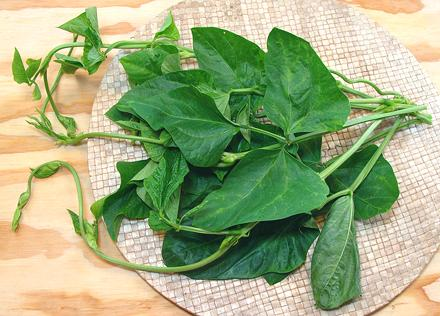

Sitaw (long Bean) Leaves

[Talbos ng Sitaw (Philippine); Vigna unguiculata var
sesquipedalis]
Filipino home cooking has a long tradition of using a wide assortment
of greens, usually harvested from the back yard garden. Some of these
are not familiar to our North American kitchens, and this is one of
that sort. It can be used in stir fries and soups.
Note that the word "Sitaw" in Filipino is inexact. It is used both
for the Asian long bean and for the more recently acquired Green Bean,
brought by Europeans (who got them from Mexico). Presumably your
supplier is providing the right kind.
More on Beans, Peas and Lentils.
Buying:
These can be had from large and active
Philippine markets. My local market puts out bundles of greens on Friday
or Saturday morning for sale over the weekend. Don't depend on the signs -
the bundles may be all mixed up (they expect their customers to know
what they are). Note the lack of fuzz and the lack of binding tendrils
(these plants are "bines", climbing by twisting around stuff). Squash
leaves are very fuzzy and Chayote leaves have lots of binding tendrils.
Bitter Melon leaves are much smaller and Chili leaves have a simple
elongated shape.
Leaves should be fresh looking, dark green, without black spots and not
wilted. If it needs refreshing when you get it home, cut off the bottom
1/2 inch of the stems and use the "full immersion" method in cold water
to refresh them, for about 1/2 hour. Then spin off the water in your
salad spinner.
Storing:
These are fairly sturdy and will last up to 5
days loosely wrapped in the fridge, if they are in good shape to start
with.
Preparing:
Pull off the leaves, leaving the leaf stems
behind (they're tougher than the main stems). Tear them to the size you
want. You can use any flower buds you find, and the tender tips - but
only so far as you can pinch them off with a snap, with no hint of
fibers. Fibrous stems will be too stringy to eat and will not become
tender even with extended cooking.
Cooking:
These are pretty sturdy greens and can stand
at least 20 minutes simmering and still be quite firm.
bp_lbleafz 140809 - www.clovegarden.com
©Andrew Grygus - agryg@clovegaden.com - Photos on this
page not otherwise credited are © cg1 -
Linking to and non-commercial use of this page permitted.